JS13k'25: I GOT UP ON THE WRONG FOOT! (WIP)
August-September 2025
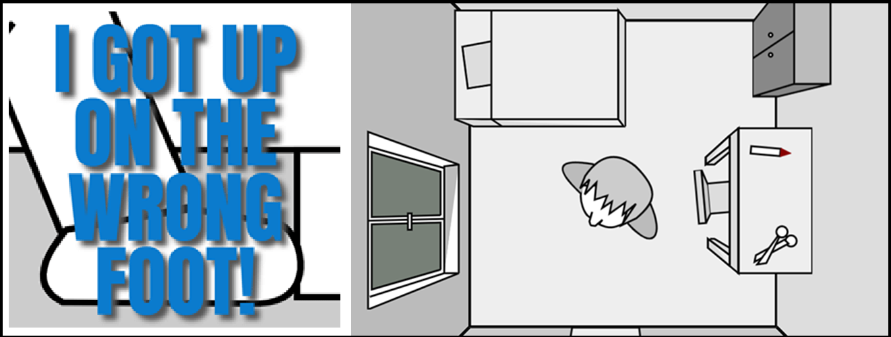
TL;DR
- My game is playable HERE
- Source code is available HERE
- It was ranked ... / 190 (and ... / ... on Mobile) !
- You can see a playthrough video here (spoilers!):
Introduction
Hello and welcome to this new edition of JS13kGames!
This year the theme was BLACK CAT, and I didn't approach the competition like the previous years:
First, I've had a busy (and pleasant 💙) summer, so I haven't really started working on my entry until August 21, one week after the beginning of the jam.
Besides that, this year's theme didn't really inspire me any game idea, or more precisely, nothing that I found fun enough.
I spent two full weeks wondering what I could create, or if I'd actually create something this year. I even asked repeatedly to my friends and various AI's what I could do, but nothing really clicked for me.
One AI suggested a game about Schrödinger's cat, that could switch between states (like alive/dead) to solve puzzles. That's definitely a game I'd like to play, but as a game dev, I wasn't inspired enough to build it myself.
For inspiration, my dear Séverine drew these concept arts of black cats on paper, which helped me a lot when I ended up adding the black cat in my game!
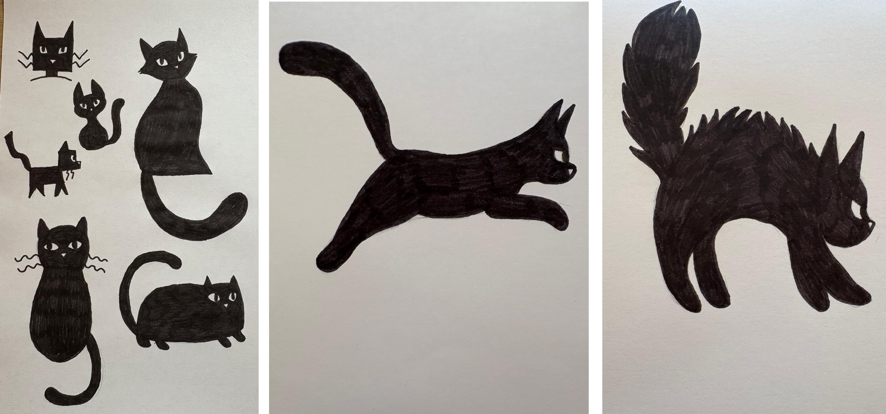
August 13-20: brainstorming
While the days were passing, I ended up considering to make a game about making superstitions come true to have bad luck. Extensive online searches (and a bit of AI) helped me gather a long list of events that were considered bad luck in different countries (to avoid having hyper specific beliefs only existing in Paraguay for example).
Here's the list I ended up with (mix of vaious french and english sources, so son't be surprised if it contains duplicates):
Click to expand
I remarked that a lot of these things could somehow happen in a single day and a single place (like a small house with a garden).
So I picked my 40 favourite items and imagined a little scenario where a man would get up on the wrong foot (in french we say "on the left foot"), and started a game where he has an entire day to be as unlucky as possible.
I scribbled my list, a quick intro storyboard and a plan of the house on my old and faithful notepad:
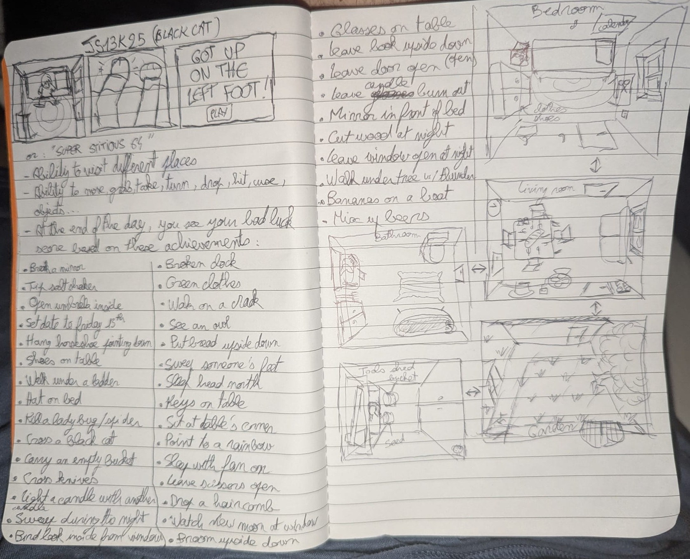
If you've already played the game, you can see how most of the final game was already present in this very early draft.
What you can also see is an ambitious art direction, where the camera sees everything from above, like a menacing presence over the hero's head.
And it's a good thing: I really want this year's entry to include things that I've never done before, or even things that were never seen before in any js13k entry... like a real day-night cycle, weather events, or an absurd amount of SVG graphics. I want it to be innovative, impressive and challenging (for me, to make).
August 21-31: Scene layout
Speaking of ambitious point of view, I decided to use my (also faithful) CSS3DFramework to create a big scene containing a house with 4 rooms, a garden and a toolshed, entirely using CSS3D planes and cubes. I stripped all the other shapes and features from the framework to make it use as little space as possible (~2kb minified, see source code here), omitted the top side of the cubes to be able to see each room's interior from above, and added a bit of CSS to let each side of the cube be colored in a slightly different shade of grey.
Bedroom:
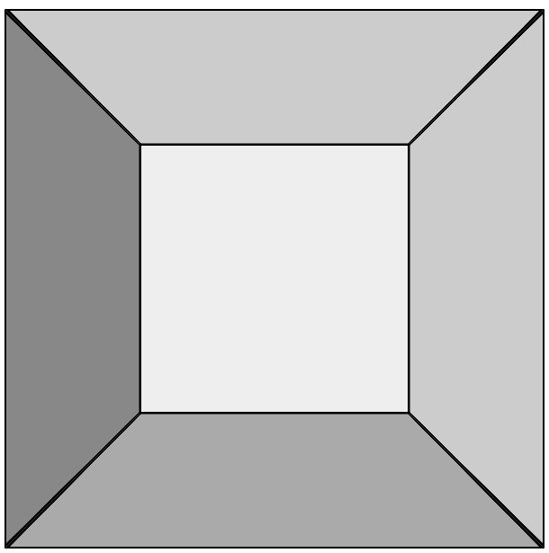
Looks nice, especially the black wall corners getting thicker when they approach the camera, which is not super easy to achieve in 2D, and comes for free here.
Whole world:
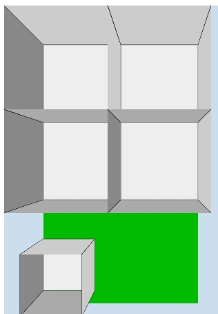
It seems to work well so far, and doesn't use too much space too: 1.5kb zipped! Let's go to the next step.
I wondered a bit how to fill my room with various objects, objects that i'd like to draw in SVG with my (still faithful) tool MiniSVGCreator. Some are on the floor, some are on walls. All of them must be seen with a zenithal perspective. The ony viable solution I could find to not have weird shape overlaps was to put my objects on a separate layer, above the cube, and to draw and position them in a way that make them look like they are in the room.
Bedroom draft with 3 SVGs
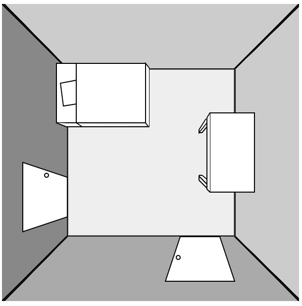
At this moment, I decided to make a (mostly) monochrome game, to enhance the gloomy "unlucky" atmosphere (and not waste time and bytes choosing a color palette for everything, too).
Elliot (on Slack) explained me how I could fix my perspective
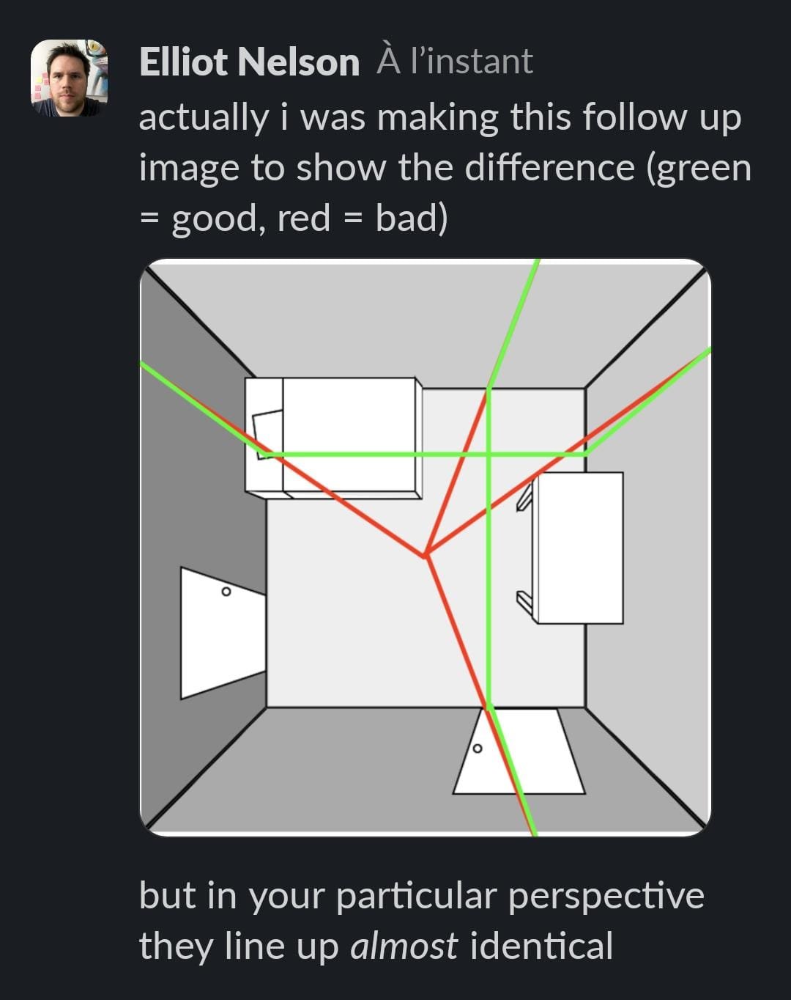
Thanks bro! Even though both our aproaches are equivalent as long as the camera is perfectly centered in the room, you are the only one who pointed the perspective issues in my screenshots.
Bedroom with more (draft) SVGs
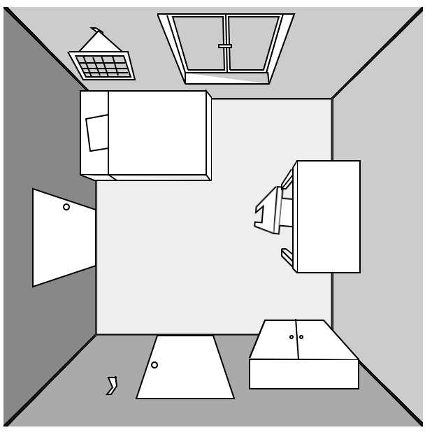
Some things (window, doors, bed) look better than others (chair, cupbard).
Bathroom draft
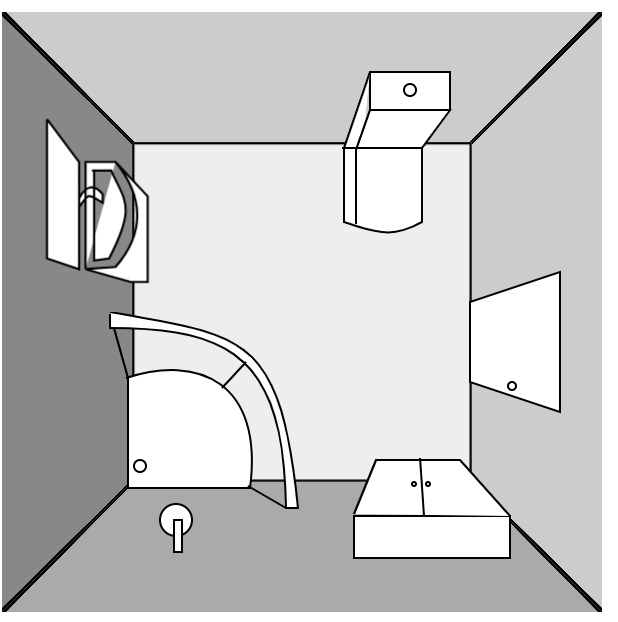
It's surprisingly uneasy to draw a convincing shower from above. Toilet and sink are challenging too.
Living room draft
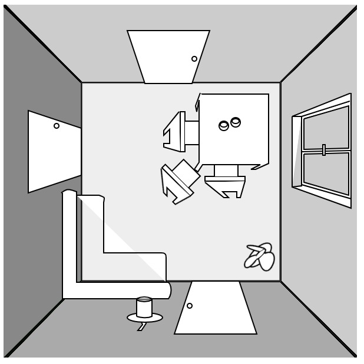
Here you can see a small fan on the floor. I intended to have it in the game initially ("sleeping with a fan on" brings bad luck) but it got scraped because it would have been too complicated to animate. Also, I was too lazy to implement all the code required to take it, bring it to the bedroom, plug it on a wall, and turn it on. I had better things to do! Also, the chairs and couch are weird here, but I will redraw them better.
Kitchen draft
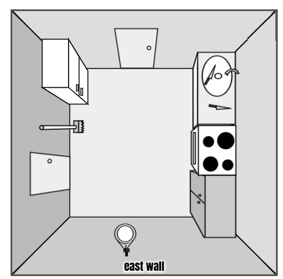
Almost nothing changed between this image and the final game, yay!
Garden draft
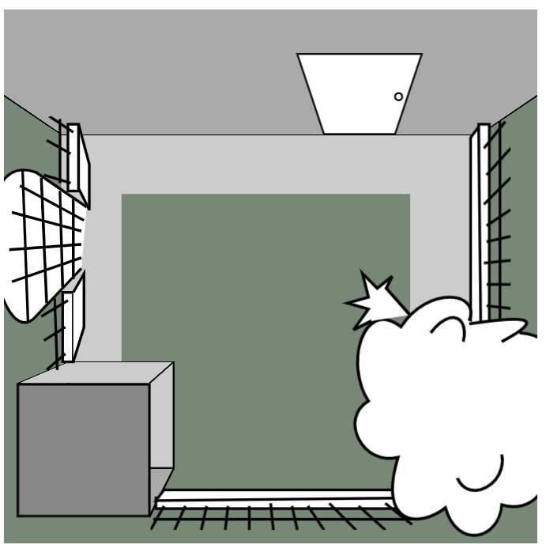
The challenge here is to draw a tree from above.
Here's a screenshot of when I'm drawing an item (broom facing down) in my editor. The text highlighted in blue is the SVG output. Raw SVG sizes range from 170 bytes (door) to 470 bytes (cupboard) depending on their complexity.
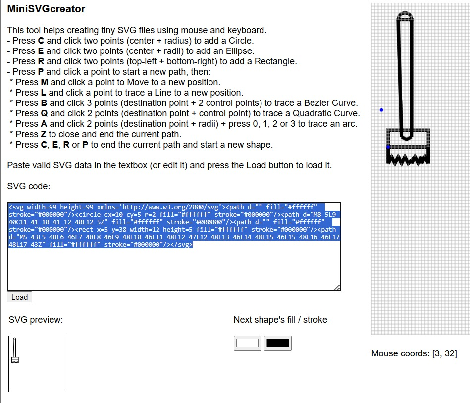
Without any interactivity, this early version of the game's world weighs 4.7kb zipped. It's a chance that SVG graphics compress very well, because I want to include as many as possible! (probably around 60). Here's a glimpse of the code I wrote to draw the kitchen with my CSS3DFramework (full file HERE)
// kitchen
C.cube({x:-100,y:-100,z:70,w:300,h:300,d:300,b:"#ddd",css:"cube"});
// doors
C.plane({w:51,h:51,x:-209,y:360,z:300,rz:-90,html:svg.door,css:"living room door",n:"lrd2"});
C.plane({w:51,h:51,x:-109,y:215,z:300,sx:-1,html:svg.door,css:"bathroom door"});
// fridge
C.plane({w:56,h:77,x:-190,y:230,z:300,html:svg.fridge,css:"fridge"});
// plane/cupboard
C.plane({w:53,h:100,x:-21+3,y:365,z:300,rz:180,sx:1.2,html:svg.plane,css:"cupboard",n:"plane"});
// bread
C.plane({w:18,h:40,x:-37,y:400,z:300,rz:180,html:svg.bread,css:"bread hidden",n:"bread"});
// sink
C.plane({w:50,h:100,x:-20+3,y:237,z:300,rz:180,sx:1.3,html:svg.sink,css:"sink"});
// broom
C.plane({w:19,h:50,x:-185,y:310,z:330,rz:-90,html:svg.broom,css:"broom",n:"broom"});
// knives
C.plane({w:12,h:29,x:-23,y:260,z:300,rz:30,html:svg.knive,css:"knive",n:"knive1"});
C.plane({w:12,h:29,x:-15,y:297,z:300,rz:100,html:svg.knive,css:"knive",n:"knive2"});
C.plane({w:12,h:29,x:-15,y:297,z:300,rz:30,html:svg.knive,css:"knive hidden",n:"knive3"});
// oven
C.plane({w:55,h:65,x:-32+3,y:330,z:340,rz:180,html:svg.oven,css:"oven"});
// Hanger
C.plane({w:8,h:11,x:-120,y:470,z:300,rz:180,html:svg.hanger,css:"hanger",n:"hanger3"});
// mirror
C.plane({w:29,h:46,x:-120,y:435,z:300,rz:180,sy:.7,html:svg.mirror,css:"mirror",n:"mirror1"});
// Horseshoe
C.plane({w:50,h:50,x:-117,y:449,z:300,rz:180,sy:.7,html:svg.horseshoe,css:"horseshoe hidden",n:"horseshoe2"});
The organization of my code here is very similar to the one I used in CASTLE ESCAPE two years ago: use plain english css classes like "sink" or "mirror" (which will help me write each object's name when the mouse hovers it: I will simply display their css class), the "hidden" class makes an object invisible (like the horseshoe, which is turned visible if the player decides to hang it in the kitchen).
I also had a bad surprise when I tried my prototype on Firefox: everything looked super blurry!
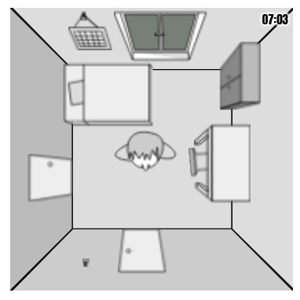
But I realized it was only the case when the page was un-zoomed. At 100% it was not great, but good enough. And I'm already late so I won't lose extra time trying to fix a known official Firefox bug (it rasters SVGs when they have CSS transforms applied to them... and my SVGs are so tiny (99x99px) that the rastering becomes very visible, hence the blur).
September 1-7: interactivity
Two weeks after the beginning of the jam, I finally started to code my first interactions, starting with the hover effects (to show the name of every object plus walls and floor), and some easy click interactions (rotate bed, open window, open cupboard). Of course, each piece of furniture that has two states (open/closed) requires two distinct SVG graphics, so I drew them little by little too.
Aaaand it's Webkit's turn to become buggy. Not a display bug, but a hover bug. For some reason, the upper half of east and west walls don't trigger mouseover/mousemove events, so in Chrome, Edge and Safari, there will be some blanks when you wander the mouse across the room. I actually spend a couple hours trying to find a fix, but nothing worked. Whatever.
As you can see, I also drew the hero in the room and made him able to rotate towards the mouse pointer (thanks again to Math.atan2 for making this easy, even though I will never not find it weird that atan2's arguments are (y,x) and not (x,y)...
However, allowing the hero to actually move around the room was more complex. So complex that I considered not implementing it at all, but I decided to do that effort so we could realize two of the game's achievements (walk under a ladder and walk on a crack).
What made the walk interaction difficult, you may ask? Well, the character's sprite is not placed in the room. It's not even placed on the SVGs layer. It's on an even higher plane. As a result, its X and Y coordinates must be precisely adjusted to make it look like he's actually on the floor. Otherwise, because of the perspective, all the movements would look completely exaggerated and the hero would move too far, often outside of the room, instead of following the mouse clicks.
Here's a slightly exaggerated view of the 3 "layers" of the bedroom, seen from the side: the room, the SVGs just above, and the hero a bit higher. ✨ Everything is an illusion! ✨
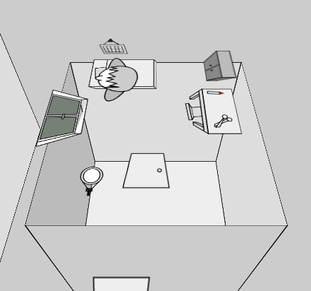
Well, if the room's walls were drawn in 3D using SVGs instead of 3D, it would have made this part much easier to implement (everything could have been put on the same level), but now that it's done, I won't bother changing it.
In the garden, there's a 4th layer of SVGs, for the tree top and the ladder that must be visible above the hero's head.
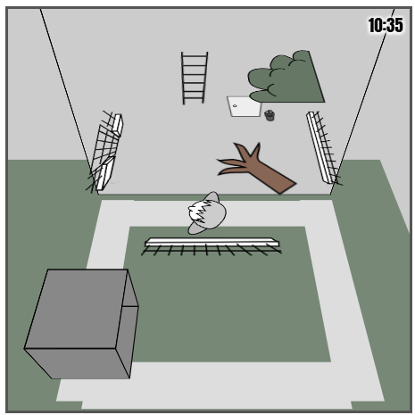
But let's continue coding all the interactions in the game, shall we? The easy ones are to open/close a piece of furniture, and the most complex ones consist in grabbing an object, then use it on another object, or put it somewhere else, or wait a certain amount of time to trigger another event.
A few days later... I added my little intro cutscene and almost finished all the bedroom actions.
Little by little, at the end of the week, all the rooms were playable and 20 achievements were already doable from my short-list of 33... which I finally reduced to 26 (because it's 2 x 13). Here are the 7 achievements that I eventually scraped:
- see an owl
- let candle burn out
- sleep with window open
- sleep with fan on
- watch new moon
- see a broken clock
- kill a ladybug
- carry an empty bucket
We're already September 7 and I don't have my black cat yet! Well, I know how I want to do it... but I'm super late!
September 8-13: a million final touches
During this final week, I worked on the game 5-7 hours per day in order to finish it on time (and wish I had started a week earlier). During the two previous weeks, I only spent 1-2 hours a day on it, which also didn't help.
I modified the rooms layout and decoration a lot, and redrew most of my SVGs in their final version.
The game contains a total of 74 svg graphics, including one left foot emoji (for the favicon) and 73 hand-drawn sprites. A new record! (Castle Escape only had 28. Amateur!)
{kind=link}
(click to enlarge)
Besides that, in the JS code, there is a total of 193 functions, 132 of them corresponding to actions that are triggered with the mouse, by the player, and the others being used for the music, sounds, timer, SVGs, menus, mouse events, intro, outro and setTimeouts.
Here's a little behind-the-scenes video showing how the camera moves between rooms, if I enable camera transitions and remove the fade-to-black transitions. As you can see, the whole world is present in memory (in the DOM) at any given time, which helps a lot in terms of rendering and object persistence. (In Castle Escape, I had to redraw each room in the right state everytime we passed a door, and it was tedious. Here, everything stays in place and it's just the camera that moves around.
The game's state, however, is still saved in a big object, in order to know if a given action has been done and if a specific achievement has been completed.
Then it's time to work on a big part of the game, the outside view, where we will see the entire day pass, but also the black cat, the rain and the rainbow (at various times of the day).
You can see the cat pass by at 13h13, the rain start at 15h30, the thunder start at 16h00 and a rainbow appear at 18h15.
The sky color follows a simple (but convincing) CSS animation and the rainbow is made from a single radial-gradient on a big div:
@keyframes sky {
5% { background: #000 } /* 8h night */
8% { background: #F41 } /* 9h30 sunrise */
10% { background: #d60 } /* 9h30 sunrise */
20% { background: #8ce } /* 11h */
30% { background: #8cc } /* 12h30 cat */
40% { background: #8aa } /* 14h */
50% { background: #444 } /* 15h30 rain */
60% { background: #444 } /* 17h rain */
70% { background: #8ce } /* 18h30 rainbow */
80% { background: #135 } /* 20h */
90% { background: #000 } /* 21h30 night */
}
#view { animation: sky 1000s; }
#rainbow {
background: radial-gradient(
circle,
rgba(0,0,0,0) 60%,
rgba(192, 0, 255, 1) 65%,
rgba(0, 192, 255, 1) 70%,
rgba(255, 255, 0, 1) 75%,
rgba(255, 0, 0, 1) 80%,
rgba(0,0,0,0) 85%
)
}The sun is just a separate yellow div going up and right in a straight line.
Overall, there is a very small amount of code used to implement such a long sequence of events, and I'm happy of how it turned out.
For the rain's graphics, I decided to do the easiest possible thing: blue lines drawn on a canvas, at random positions, 20 times per second. In the outside view, they are parallel, and in the garden and the tool shed, they all point to the center of the screen.
// Rain
ctx = rain.getContext("2d");
setInterval((x,y,i)=>{
rain.width ^= 0;
ctx.lineWidth = 4;
ctx.strokeStyle = "#346";
// Draw 100 lines
for(i = 100; i--;){
// Outside view (parallel lines)
if(watching){
ctx.moveTo(x = Math.random()*600, y = Math.random()*600)
ctx.lineTo(x-5,y+20);
}
// Garden (concentric lines)
else if(room == 4){
ctx.moveTo(x = Math.random()*600, y = Math.random()*600)
ctx.lineTo(x + (300 - x) / 10, y + (300 - y) / 10);
}
// Toolshed (same, but only in the door)
else if(room == 5){
ctx.moveTo(x = Math.random()*600 + 460, y = Math.random()*400+ 100)
ctx.lineTo(x + (300 - x) / 10, y + (300 - y) / 10);
}
}
ctx.stroke();
},50);DEMO
While I was adding the black cat in my exterior view, Frank Force had the great idea to post a Meow sound made with ZzFx on Slack, so I included it (lightly tweaked) in my game. Thanks to him! I added 1kb of minified code just for this "meow" but it was totally worth it.
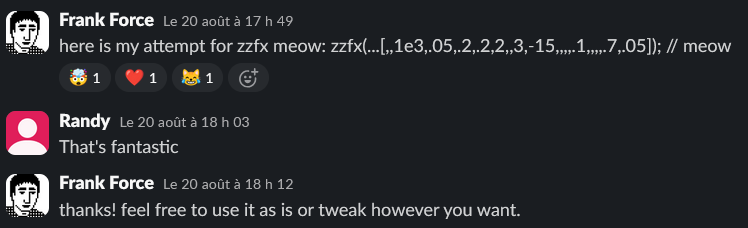
// ZZfx
zv=.3, // volume
zx=new AudioContext, // audio context
z= // play sound
(p=1,k=.05,b=220,e=0,r=0,t=.1,q=0,D=1,u=0,y=0,v=0,z=0,l=0,E=0,A=0,F=0,c=0,w=1,m=0,B=0
,N=0)=>{let M=Math,d=2*M.PI,R=44100,G=u*=500*d/R/R,C=b*=(1-k+2*k*M.random(k=[]))*d/R,
g=0,H=0,a=0,n=1,I=0,J=0,f=0,h=N<0?-1:1,x=d*h*N*2/R,L=M.cos(x),Z=M.sin,K=Z(x)/4,O=1+K,
X=-2*L/O,Y=(1-K)/O,P=(1+h*L)/2/O,Q=-(h+L)/O,S=P,T=0,U=0,V=0,W=0;e=R*e+9;m*=R;r*=R;t*=
R;c*=R;y*=500*d/R**3;A*=d/R;v*=d/R;z*=R;l=R*l|0;p*=zv;for(h=e+m+r+t+c|0;aa?0:(az&&(b+=v,C+=v,n=0),!l||++I%l||(b=C,u=G,n=n||1);p=zx.
createBuffer(1,h,R);p.getChannelData(0).set(k);b=zx.createBufferSource();
b.buffer=p;b.connect(zx.destination);b.start()}
// Meow
z(...[,,1100,.05,.2,.2,2,,2,-15,,,,.1,,,,.3,.05]); DEMO
Speaking of sounds, I also included my own player (from MiniSoundEditor) and 7 sounds effects (used for scribbling, walking, tipping the salt shaker, opening and closing the doors and windows, breaking the mirror, and finally, the thunder), adding another kilobyte to my minified code.
// thunder sound
thu = (i,q,n) => {
n=25000;
if (i > n) return null;
return Math.sin(i/200 - Math.sin(i/331)*Math.sin(i/61) + Math.sin(Math.sin(i/59)/39) * 33)*t(i,n)*(room > 3 ? 9 : 2);
}
// nudge Sound
nu = (i,q,n) => {
n=6e3;
if (i > n) return null;
q = t(i,n);
return Math.sin(i*0.01*Math.sin(0.009*i+Math.sin(i/200))+Math.sin(i/100))*q*q/10;
}
// scribble sound
wr = i => (Math.sin(i/200) + Math.sin(i/350) + Math.sin(i/800))* Math.exp(-i/60000)
// ting sound
ting = i => (i%10 < 5 ? 1 : -1) * Math.exp(-i/2000)
// open sound
op = (i,q,n) => {
n=25000;
if (i > n) return null;
q = t(i,n);
return Math.sin(i*0.001*Math.sin(0.009*i+Math.sin(i/200))+Math.sin(i/100))*q*q/10;
}
// Explosion sound (break glass)
ex = i => (Math.random() * 2 - 1) * Math.exp(-i/1e4);
// Step sound
step = (i,q,n) => {
n=3800;
if (i > n) return null;
q = t(i,n);
return Math.sin(i*0.01*Math.sin(0.001*i+Math.sin(i/200))+Math.sin(i/200))*q*q/9;
}
// Helper function
t=(i,n)=>(n-i)/n;
// Sound player
play = (f,r,A,m,b,i,s) => {
A=new AudioContext()
m=A.createBuffer(1,96e3,48e3)
b=m.getChannelData(0)
for(i=96e3;i--;)b[r?20000-i:i]=f(i)
s=A.createBufferSource()
s.buffer=m
s.connect(A.destination)
s.start()
}DEMO
Note that the "close" sound is the "open" sound played in reverse. I adapted the sound player in order to achieve this effect. The "step" sound is played multiple times (2 when walking inside a room, 3 when changing rooms). The "thunder" sound is played at a lower volume when we are indoors.
I added a third sound player just for the rain (a white noise generator):
// Rain
AA = new AudioContext();
bs = 4096;
wn = AA.createScriptProcessor(bs, 1, 1);
wn.onaudioprocess = (e,i,output) => {
output = e.outputBuffer.getChannelData(0);
for (i = 0; i < bs; i++) {
output[i] = (Math.random() * 2 - 1)/((room > 3 || (room == 0 &&state[0].window== 1) || (room == 2 && (state[2].window== 1 || state[2].door4 == 1))) ? 50 : 220);
}
}
wn.connect(AA.destination);
// Stop rain
AA.close();DEMO
> > > >
And as if 3 different sound players were not enough, I completed the development of this entry by adding some music! I didn't have much time, or bytes left, but I also knew that a complete game session would last at least 15+ minutes... so I naturally thought about Ravel's Bolero (which also lasts for 15+ minutes).
Instead of adding the entirety of the song in my code, I only extracted the first 30 seconds (about 140 notes) from a MIDI file and played them in a loop, but with a twist: at each loop, I play it one tone higher. It brings a bit of variety and the well-known crescendo effect for a relatively small price (900 bytes minified).
// Music
// Setup
A=new AudioContext,m=A.createBuffer(1,1e6,44100),
// Notes
m0=[,,,,72,,,71,72,74,72,71,69,72,,72,69,72,,,71,72,69,67,64,65,67,,,65,64,62,64,65,67,69,67,,,69,71,69,67,65,64,62,64,62,60,,60,62,64,,65,,62,,,67,67,,,74,,,72,71,69,71,72,74,72,71,,,72,71,69,72,71,69,65,,65,65,65,,69,,72,69,71,67,65,,65,65,65,,69,,71,67,69,65,62,,62,60,62,,,62,62,62,,65,,69,65,67,64,62,,62,60,62,,,62,60,62,,64,65,67,,,65,64,62,60],
// Generate the entire song with 30 loops
for(music=[],i=0;i<30;i++)for(j=0;j<143;j++)music.push(m0[j]?m0[j]-19+i*2:0);
// Piano synth
piano=(e,t,o,r,a,l,i,h,d)=>{for(v=[],c=0,r=(e,t,s,o)=>Math.sin(e/t*6.28*s+o),a=(e,t)=>Math.sin(e/44100*t*6.28+r(e,44100,t,0)**2+.75*r(e,44100,t,.25)+.1*r(e,44100,t,.5)),d=[],h=0;h<39690;h++)d[h]=(1-(h-88.2)/39601.8)*a(h,e)/5/5;m.getChannelData(0).set(d),s=A.createBufferSource(),s.buffer=m,s.connect(A.destination),s.start()},_n=0,
// Play
play_music=()=>{setInterval(()=>{_n++,music[_n]&&piano(440*1.06**(music[_n]-80))},350)}The song can be heard in this year's album Cat Bites (on track 5). Coincidence! The album's curator Joao also chose Ravel's Bolero for his entry, which you can hear on track 4. His Bolero has a very different style (seesaw wave, no crescendo, 2 tracks), and I like it a lot too!
A few close friends playtested the game and helped me fix a few bugs (there are still a few bugs in the final release but whatever, almost no one will see them).
Thanks to Roadroller and js13k-pack, almost no golfing was required to fit into 13kb (I only took a few minutes reducing the name of some variables and functions to one or two chars, and it was good)!
Here's a map of my minified code (click to enlarge):
{kind=link}
And here are some stats about the byte budget on day 30:
- Commented code: 85.3kb (2203 lines of code)
- Minified code: 69kb (a third of this size is used by SVGs)
- Zipped: 17kb
- Roadrolled + zipped: 12.7kb... So I could have added even more stuff if I had the time and the energy!
But it was enough for me. I was happy with the result and submitted my entry a few hours before the deadline. I don't know if people will find it fun, but at least I released something. Yayyy!
Feedbacks: TODO
Conclusion: TODO